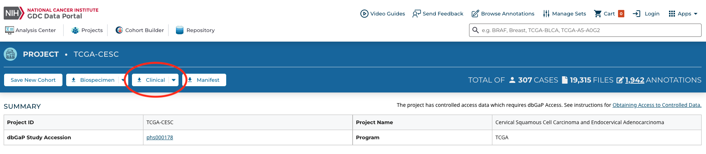

# Import necessary libraries
import requests
import pandas as pd
import os
import json
from datetime import datetime
import timeData Collection
Overview
Data Source
The data used in this project were obtained from the National Cancer Institute (NCI) Genomic Data Commons (GDC)1, a centralized repository designed to support cancer research by providing harmonized clinical, genomic, and exposure-related data across multiple cancer types. The GDC integrates data from large-scale initiatives such as The Cancer Genome Atlas (TCGA)2 and applies standardized data models, vocabularies, and quality control procedures to ensure consistency and reproducibility across studies.
{alt = “National Cancer Institute Genomic Data Commons home page”}
Data Collection Methods
For this analysis, we focused on two TCGA cohorts: Breast Invasive Carcinoma (TCGA-BRCA) and Cervical Squamous Cell Carcinoma and Endocervical Adenocarcinoma (TCGA-CESC). These datasets were selected to enable comparative analysis of two common cancers affecting women, while allowing investigation into differences in tumor characteristics, treatment patterns, and survival outcomes.
Clinical data were downloaded from the GDC Data Portal in tabular format (clinical.tsv and related files), which aggregate information across several hierarchical entities, including cases, demographic, diagnoses, treatments, and exposures. Variables include patient-level demographics (e.g., age at diagnosis, race, vital status), tumor-specific characteristics (e.g., stage, grade, morphology), treatment indicators (e.g., treatment type), and outcome-related fields (e.g., days to last follow-up). All time-to-event variables in the GDC are reported in days, indexed relative to clinically meaningful anchor points such as diagnosis or enrollment dates.
{alt = “National Cancer Institute Genomic Data Commons data download page”}
Data Structure and Format
Importantly, the GDC data are de-identified to protect patient privacy, and certain variables may be obfuscated or missing by design. For example, ages above a threshold may be masked, dates may be offset, and exposure variables such as smoking status may be underreported. Additionally, patients may have multiple rows per case, reflecting repeated diagnoses, treatments, or follow-up events, necessitating aggregation and careful preprocessing prior to modeling.
#| echo: false
#| warning: false
#| tbl-cap: Rows showing a unique patient (cases.submitter_id) and their different treatments for breast cancer
import pandas as pd
# Import dataset
brca_df = pd.read_csv("../../data/raw-data/brca/brca-clinical.tsv", sep="\t")
# Show rows for patient TCGA-E2-A1IU with selected columns
patient_data = brca_df[brca_df["cases.submitter_id"] == "TCGA-E2-A1IU"]
columns_to_show = ["cases.submitter_id", "treatments.treatment_type",
"treatments.treatment_intent_type", "demographic.vital_status",
"diagnoses.ajcc_pathologic_stage"]
patient_data[columns_to_show]
Data
While TCGA cohorts are not fully representative of the general U.S. population, they remain one of the most comprehensive publicly available cancer datasets, widely used in both biomedical and data science research. The use of GDC data enables reproducible analysis while providing sufficient clinical depth to explore survival patterns and predictive modeling across cancer types.
Our raw data can be found in our repository here, including a data dictionary.
As of 11/05/2025, - the clinical breast cancer dataset originally has 5546 rows and 210 columns representing 1098 patients - the clinical cervical cancer dataset originally has 1535 rows and 210 columns representing 307 patients
Code
Breast (BRCA) Cancer Dataset
# Open BRCA clinical tsv data
brca = pd.read_csv('../../data/raw-data/brca/brca-clinical.tsv', sep='\t')
brca.head()/var/folders/pk/q040shz17k97bg4ndnn1q0b00000gn/T/ipykernel_62797/953297970.py:3: DtypeWarning: Columns (10) have mixed types. Specify dtype option on import or set low_memory=False.
brca = pd.read_csv('data/raw-data/brca/brca-clinical.tsv', sep='\t')| project.project_id | cases.case_id | cases.consent_type | cases.days_to_consent | cases.days_to_lost_to_followup | cases.disease_type | cases.index_date | cases.lost_to_followup | cases.primary_site | cases.submitter_id | ... | treatments.treatment_duration | treatments.treatment_effect | treatments.treatment_effect_indicator | treatments.treatment_frequency | treatments.treatment_id | treatments.treatment_intent_type | treatments.treatment_or_therapy | treatments.treatment_outcome | treatments.treatment_outcome_duration | treatments.treatment_type | |
|---|---|---|---|---|---|---|---|---|---|---|---|---|---|---|---|---|---|---|---|---|---|
| 0 | TCGA-BRCA | 001cef41-ff86-4d3f-a140-a647ac4b10a1 | Informed Consent | -34 | '-- | Ductal and Lobular Neoplasms | Diagnosis | '-- | Breast | TCGA-E2-A1IU | ... | '-- | '-- | '-- | '-- | 1b884f21-eb24-467f-aba2-208af17070b9 | Adjuvant | no | '-- | '-- | Radiation Therapy, NOS |
| 1 | TCGA-BRCA | 001cef41-ff86-4d3f-a140-a647ac4b10a1 | Informed Consent | -34 | '-- | Ductal and Lobular Neoplasms | Diagnosis | '-- | Breast | TCGA-E2-A1IU | ... | '-- | '-- | '-- | '-- | 27868bc3-23c8-5e85-a0e2-314e6cdf9b2a | Adjuvant | yes | Treatment Ongoing | '-- | Hormone Therapy |
| 2 | TCGA-BRCA | 001cef41-ff86-4d3f-a140-a647ac4b10a1 | Informed Consent | -34 | '-- | Ductal and Lobular Neoplasms | Diagnosis | '-- | Breast | TCGA-E2-A1IU | ... | '-- | '-- | '-- | '-- | aedf144c-6b7b-4d76-a3cb-4271aef10f1d | First-Line Therapy | yes | '-- | '-- | Surgery, NOS |
| 3 | TCGA-BRCA | 0045349c-69d9-4306-a403-c9c1fa836644 | Informed Consent | 76 | '-- | Adenomas and Adenocarcinomas | Diagnosis | '-- | Breast | TCGA-A1-A0SB | ... | '-- | '-- | '-- | '-- | 0a534cae-de91-5e77-a3e7-b52d46bd3966 | First-Line Therapy | yes | '-- | '-- | Surgery, NOS |
| 4 | TCGA-BRCA | 00807dae-9f4a-4fd1-aac2-82eb11bf2afb | Informed Consent | 19 | '-- | Adnexal and Skin Appendage Neoplasms | Diagnosis | No | Breast | TCGA-A2-A04W | ... | '-- | '-- | '-- | '-- | 024faa94-ec57-4d14-b919-62dcab409958 | Adjuvant | yes | Treatment Ongoing | '-- | Bisphosphonate Therapy |
5 rows × 210 columns
nrow, ncol = brca.shape
print(f'The data has {nrow} rows and {ncol} columns.')The data has 5546 rows and 210 columns.# List column names
print("Column names:")
print(brca.columns.tolist())Column names:
['project.project_id', 'cases.case_id', 'cases.consent_type', 'cases.days_to_consent', 'cases.days_to_lost_to_followup', 'cases.disease_type', 'cases.index_date', 'cases.lost_to_followup', 'cases.primary_site', 'cases.submitter_id', 'demographic.age_at_index', 'demographic.age_is_obfuscated', 'demographic.cause_of_death', 'demographic.cause_of_death_source', 'demographic.country_of_birth', 'demographic.country_of_residence_at_enrollment', 'demographic.days_to_birth', 'demographic.days_to_death', 'demographic.demographic_id', 'demographic.education_level', 'demographic.ethnicity', 'demographic.gender', 'demographic.marital_status', 'demographic.occupation_duration_years', 'demographic.population_group', 'demographic.premature_at_birth', 'demographic.race', 'demographic.submitter_id', 'demographic.vital_status', 'demographic.weeks_gestation_at_birth', 'demographic.year_of_birth', 'demographic.year_of_death', 'diagnoses.adrenal_hormone', 'diagnoses.age_at_diagnosis', 'diagnoses.ajcc_clinical_m', 'diagnoses.ajcc_clinical_n', 'diagnoses.ajcc_clinical_stage', 'diagnoses.ajcc_clinical_t', 'diagnoses.ajcc_pathologic_m', 'diagnoses.ajcc_pathologic_n', 'diagnoses.ajcc_pathologic_stage', 'diagnoses.ajcc_pathologic_t', 'diagnoses.ajcc_serum_tumor_markers', 'diagnoses.ajcc_staging_system_edition', 'diagnoses.ann_arbor_b_symptoms', 'diagnoses.ann_arbor_b_symptoms_described', 'diagnoses.ann_arbor_clinical_stage', 'diagnoses.ann_arbor_extranodal_involvement', 'diagnoses.ann_arbor_pathologic_stage', 'diagnoses.best_overall_response', 'diagnoses.burkitt_lymphoma_clinical_variant', 'diagnoses.calgb_risk_group', 'diagnoses.cancer_detection_method', 'diagnoses.child_pugh_classification', 'diagnoses.clark_level', 'diagnoses.classification_of_tumor', 'diagnoses.cog_liver_stage', 'diagnoses.cog_neuroblastoma_risk_group', 'diagnoses.cog_renal_stage', 'diagnoses.cog_rhabdomyosarcoma_risk_group', 'diagnoses.contiguous_organ_invaded', 'diagnoses.days_to_best_overall_response', 'diagnoses.days_to_diagnosis', 'diagnoses.days_to_last_follow_up', 'diagnoses.days_to_last_known_disease_status', 'diagnoses.days_to_recurrence', 'diagnoses.diagnosis_id', 'diagnoses.diagnosis_is_primary_disease', 'diagnoses.double_expressor_lymphoma', 'diagnoses.double_hit_lymphoma', 'diagnoses.eln_risk_classification', 'diagnoses.enneking_msts_grade', 'diagnoses.enneking_msts_metastasis', 'diagnoses.enneking_msts_stage', 'diagnoses.enneking_msts_tumor_site', 'diagnoses.ensat_clinical_m', 'diagnoses.ensat_pathologic_n', 'diagnoses.ensat_pathologic_stage', 'diagnoses.ensat_pathologic_t', 'diagnoses.esophageal_columnar_dysplasia_degree', 'diagnoses.esophageal_columnar_metaplasia_present', 'diagnoses.fab_morphology_code', 'diagnoses.figo_stage', 'diagnoses.figo_staging_edition_year', 'diagnoses.first_symptom_longest_duration', 'diagnoses.first_symptom_prior_to_diagnosis', 'diagnoses.gastric_esophageal_junction_involvement', 'diagnoses.gleason_grade_group', 'diagnoses.gleason_grade_tertiary', 'diagnoses.gleason_patterns_percent', 'diagnoses.gleason_score', 'diagnoses.goblet_cells_columnar_mucosa_present', 'diagnoses.icd_10_code', 'diagnoses.igcccg_stage', 'diagnoses.inpc_grade', 'diagnoses.inpc_histologic_group', 'diagnoses.inrg_stage', 'diagnoses.inss_stage', 'diagnoses.international_prognostic_index', 'diagnoses.irs_group', 'diagnoses.irs_stage', 'diagnoses.ishak_fibrosis_score', 'diagnoses.iss_stage', 'diagnoses.last_known_disease_status', 'diagnoses.laterality', 'diagnoses.margin_distance', 'diagnoses.margins_involved_site', 'diagnoses.masaoka_stage', 'diagnoses.max_tumor_bulk_site', 'diagnoses.medulloblastoma_molecular_classification', 'diagnoses.melanoma_known_primary', 'diagnoses.metastasis_at_diagnosis', 'diagnoses.metastasis_at_diagnosis_site', 'diagnoses.method_of_diagnosis', 'diagnoses.micropapillary_features', 'diagnoses.mitosis_karyorrhexis_index', 'diagnoses.mitotic_count', 'diagnoses.morphology', 'diagnoses.ovarian_specimen_status', 'diagnoses.ovarian_surface_involvement', 'diagnoses.papillary_renal_cell_type', 'diagnoses.pediatric_kidney_staging', 'diagnoses.peritoneal_fluid_cytological_status', 'diagnoses.pregnant_at_diagnosis', 'diagnoses.primary_diagnosis', 'diagnoses.primary_disease', 'diagnoses.primary_gleason_grade', 'diagnoses.prior_malignancy', 'diagnoses.prior_treatment', 'diagnoses.progression_or_recurrence', 'diagnoses.residual_disease', 'diagnoses.satellite_nodule_present', 'diagnoses.secondary_gleason_grade', 'diagnoses.site_of_resection_or_biopsy', 'diagnoses.sites_of_involvement', 'diagnoses.sites_of_involvement_count', 'diagnoses.submitter_id', 'diagnoses.supratentorial_localization', 'diagnoses.synchronous_malignancy', 'diagnoses.tissue_or_organ_of_origin', 'diagnoses.tumor_burden', 'diagnoses.tumor_confined_to_organ_of_origin', 'diagnoses.tumor_depth', 'diagnoses.tumor_focality', 'diagnoses.tumor_grade', 'diagnoses.tumor_grade_category', 'diagnoses.tumor_of_origin', 'diagnoses.tumor_regression_grade', 'diagnoses.uicc_clinical_m', 'diagnoses.uicc_clinical_n', 'diagnoses.uicc_clinical_stage', 'diagnoses.uicc_clinical_t', 'diagnoses.uicc_pathologic_m', 'diagnoses.uicc_pathologic_n', 'diagnoses.uicc_pathologic_stage', 'diagnoses.uicc_pathologic_t', 'diagnoses.uicc_staging_system_edition', 'diagnoses.ulceration_indicator', 'diagnoses.weiss_assessment_findings', 'diagnoses.weiss_assessment_score', 'diagnoses.who_cns_grade', 'diagnoses.who_nte_grade', 'diagnoses.wilms_tumor_histologic_subtype', 'diagnoses.year_of_diagnosis', 'treatments.chemo_concurrent_to_radiation', 'treatments.clinical_trial_indicator', 'treatments.course_number', 'treatments.days_to_treatment_end', 'treatments.days_to_treatment_start', 'treatments.drug_category', 'treatments.embolic_agent', 'treatments.initial_disease_status', 'treatments.lesions_treated_number', 'treatments.margin_distance', 'treatments.margin_status', 'treatments.margins_involved_site', 'treatments.number_of_cycles', 'treatments.number_of_fractions', 'treatments.prescribed_dose', 'treatments.prescribed_dose_units', 'treatments.pretreatment', 'treatments.protocol_identifier', 'treatments.radiosensitizing_agent', 'treatments.reason_treatment_ended', 'treatments.reason_treatment_not_given', 'treatments.regimen_or_line_of_therapy', 'treatments.residual_disease', 'treatments.route_of_administration', 'treatments.submitter_id', 'treatments.therapeutic_agents', 'treatments.therapeutic_level_achieved', 'treatments.therapeutic_levels_achieved', 'treatments.therapeutic_target_level', 'treatments.timepoint_category', 'treatments.treatment_anatomic_site', 'treatments.treatment_anatomic_sites', 'treatments.treatment_arm', 'treatments.treatment_dose', 'treatments.treatment_dose_max', 'treatments.treatment_dose_units', 'treatments.treatment_duration', 'treatments.treatment_effect', 'treatments.treatment_effect_indicator', 'treatments.treatment_frequency', 'treatments.treatment_id', 'treatments.treatment_intent_type', 'treatments.treatment_or_therapy', 'treatments.treatment_outcome', 'treatments.treatment_outcome_duration', 'treatments.treatment_type']# Number of unique patients
unique_patients = brca['cases.submitter_id'].nunique()
print(f'The data has {unique_patients} unique patients.')The data has 1098 unique patients.Cervical (CESC) Cancer Dataset
Clinical Data
# Open CESC tsv data
cesc = pd.read_csv('../../data/raw-data/cesc/cesc-clinical.tsv', sep='\t')
cesc.head(3)| project.project_id | cases.case_id | cases.consent_type | cases.days_to_consent | cases.days_to_lost_to_followup | cases.disease_type | cases.index_date | cases.lost_to_followup | cases.primary_site | cases.submitter_id | ... | treatments.treatment_duration | treatments.treatment_effect | treatments.treatment_effect_indicator | treatments.treatment_frequency | treatments.treatment_id | treatments.treatment_intent_type | treatments.treatment_or_therapy | treatments.treatment_outcome | treatments.treatment_outcome_duration | treatments.treatment_type | |
|---|---|---|---|---|---|---|---|---|---|---|---|---|---|---|---|---|---|---|---|---|---|
| 0 | TCGA-CESC | 00ad0ffe-2105-4829-a495-1c2aceb5bb31 | Informed Consent | 0 | '-- | Squamous Cell Neoplasms | Diagnosis | Yes | Cervix uteri | TCGA-EK-A2R9 | ... | '-- | '-- | '-- | '-- | 672b3cf9-bb40-4f6f-a1c9-69ac3383fbd5 | '-- | '-- | '-- | '-- | Hysterectomy, NOS |
| 1 | TCGA-CESC | 00ad0ffe-2105-4829-a495-1c2aceb5bb31 | Informed Consent | 0 | '-- | Squamous Cell Neoplasms | Diagnosis | Yes | Cervix uteri | TCGA-EK-A2R9 | ... | '-- | '-- | '-- | '-- | d4baa31f-8c1f-5333-afcd-836816fd1a2a | Adjuvant | unknown | '-- | '-- | Pharmaceutical Therapy, NOS |
| 2 | TCGA-CESC | 00ad0ffe-2105-4829-a495-1c2aceb5bb31 | Informed Consent | 0 | '-- | Squamous Cell Neoplasms | Diagnosis | Yes | Cervix uteri | TCGA-EK-A2R9 | ... | '-- | '-- | '-- | '-- | e79370ba-36f0-4639-bc8f-119ba2b2457b | Adjuvant | unknown | '-- | '-- | Radiation Therapy, NOS |
| 3 | TCGA-CESC | 00bca18c-b3d4-45a3-8f19-034cc40449a4 | Informed Consent | 2108 | '-- | Squamous Cell Neoplasms | Diagnosis | Yes | Cervix uteri | TCGA-C5-A2LV | ... | '-- | '-- | '-- | '-- | 277d525e-9674-4954-b427-3e829d469b8f | '-- | '-- | '-- | '-- | Hysterectomy, NOS |
| 4 | TCGA-CESC | 00bca18c-b3d4-45a3-8f19-034cc40449a4 | Informed Consent | 2108 | '-- | Squamous Cell Neoplasms | Diagnosis | Yes | Cervix uteri | TCGA-C5-A2LV | ... | '-- | '-- | '-- | '-- | 788ff156-d009-46f7-b832-f39b11ed13ac | Adjuvant | no | '-- | '-- | Radiation Therapy, NOS |
5 rows × 210 columns
nrow, ncol = cesc.shape
print(f'The data has {nrow} rows and {ncol} columns.')The data has 1535 rows and 210 columns.# List column names
print("Column names:")
print(cesc.columns.tolist())Column names:
['project.project_id', 'cases.case_id', 'cases.consent_type', 'cases.days_to_consent', 'cases.days_to_lost_to_followup', 'cases.disease_type', 'cases.index_date', 'cases.lost_to_followup', 'cases.primary_site', 'cases.submitter_id', 'demographic.age_at_index', 'demographic.age_is_obfuscated', 'demographic.cause_of_death', 'demographic.cause_of_death_source', 'demographic.country_of_birth', 'demographic.country_of_residence_at_enrollment', 'demographic.days_to_birth', 'demographic.days_to_death', 'demographic.demographic_id', 'demographic.education_level', 'demographic.ethnicity', 'demographic.gender', 'demographic.marital_status', 'demographic.occupation_duration_years', 'demographic.population_group', 'demographic.premature_at_birth', 'demographic.race', 'demographic.submitter_id', 'demographic.vital_status', 'demographic.weeks_gestation_at_birth', 'demographic.year_of_birth', 'demographic.year_of_death', 'diagnoses.adrenal_hormone', 'diagnoses.age_at_diagnosis', 'diagnoses.ajcc_clinical_m', 'diagnoses.ajcc_clinical_n', 'diagnoses.ajcc_clinical_stage', 'diagnoses.ajcc_clinical_t', 'diagnoses.ajcc_pathologic_m', 'diagnoses.ajcc_pathologic_n', 'diagnoses.ajcc_pathologic_stage', 'diagnoses.ajcc_pathologic_t', 'diagnoses.ajcc_serum_tumor_markers', 'diagnoses.ajcc_staging_system_edition', 'diagnoses.ann_arbor_b_symptoms', 'diagnoses.ann_arbor_b_symptoms_described', 'diagnoses.ann_arbor_clinical_stage', 'diagnoses.ann_arbor_extranodal_involvement', 'diagnoses.ann_arbor_pathologic_stage', 'diagnoses.best_overall_response', 'diagnoses.burkitt_lymphoma_clinical_variant', 'diagnoses.calgb_risk_group', 'diagnoses.cancer_detection_method', 'diagnoses.child_pugh_classification', 'diagnoses.clark_level', 'diagnoses.classification_of_tumor', 'diagnoses.cog_liver_stage', 'diagnoses.cog_neuroblastoma_risk_group', 'diagnoses.cog_renal_stage', 'diagnoses.cog_rhabdomyosarcoma_risk_group', 'diagnoses.contiguous_organ_invaded', 'diagnoses.days_to_best_overall_response', 'diagnoses.days_to_diagnosis', 'diagnoses.days_to_last_follow_up', 'diagnoses.days_to_last_known_disease_status', 'diagnoses.days_to_recurrence', 'diagnoses.diagnosis_id', 'diagnoses.diagnosis_is_primary_disease', 'diagnoses.double_expressor_lymphoma', 'diagnoses.double_hit_lymphoma', 'diagnoses.eln_risk_classification', 'diagnoses.enneking_msts_grade', 'diagnoses.enneking_msts_metastasis', 'diagnoses.enneking_msts_stage', 'diagnoses.enneking_msts_tumor_site', 'diagnoses.ensat_clinical_m', 'diagnoses.ensat_pathologic_n', 'diagnoses.ensat_pathologic_stage', 'diagnoses.ensat_pathologic_t', 'diagnoses.esophageal_columnar_dysplasia_degree', 'diagnoses.esophageal_columnar_metaplasia_present', 'diagnoses.fab_morphology_code', 'diagnoses.figo_stage', 'diagnoses.figo_staging_edition_year', 'diagnoses.first_symptom_longest_duration', 'diagnoses.first_symptom_prior_to_diagnosis', 'diagnoses.gastric_esophageal_junction_involvement', 'diagnoses.gleason_grade_group', 'diagnoses.gleason_grade_tertiary', 'diagnoses.gleason_patterns_percent', 'diagnoses.gleason_score', 'diagnoses.goblet_cells_columnar_mucosa_present', 'diagnoses.icd_10_code', 'diagnoses.igcccg_stage', 'diagnoses.inpc_grade', 'diagnoses.inpc_histologic_group', 'diagnoses.inrg_stage', 'diagnoses.inss_stage', 'diagnoses.international_prognostic_index', 'diagnoses.irs_group', 'diagnoses.irs_stage', 'diagnoses.ishak_fibrosis_score', 'diagnoses.iss_stage', 'diagnoses.last_known_disease_status', 'diagnoses.laterality', 'diagnoses.margin_distance', 'diagnoses.margins_involved_site', 'diagnoses.masaoka_stage', 'diagnoses.max_tumor_bulk_site', 'diagnoses.medulloblastoma_molecular_classification', 'diagnoses.melanoma_known_primary', 'diagnoses.metastasis_at_diagnosis', 'diagnoses.metastasis_at_diagnosis_site', 'diagnoses.method_of_diagnosis', 'diagnoses.micropapillary_features', 'diagnoses.mitosis_karyorrhexis_index', 'diagnoses.mitotic_count', 'diagnoses.morphology', 'diagnoses.ovarian_specimen_status', 'diagnoses.ovarian_surface_involvement', 'diagnoses.papillary_renal_cell_type', 'diagnoses.pediatric_kidney_staging', 'diagnoses.peritoneal_fluid_cytological_status', 'diagnoses.pregnant_at_diagnosis', 'diagnoses.primary_diagnosis', 'diagnoses.primary_disease', 'diagnoses.primary_gleason_grade', 'diagnoses.prior_malignancy', 'diagnoses.prior_treatment', 'diagnoses.progression_or_recurrence', 'diagnoses.residual_disease', 'diagnoses.satellite_nodule_present', 'diagnoses.secondary_gleason_grade', 'diagnoses.site_of_resection_or_biopsy', 'diagnoses.sites_of_involvement', 'diagnoses.sites_of_involvement_count', 'diagnoses.submitter_id', 'diagnoses.supratentorial_localization', 'diagnoses.synchronous_malignancy', 'diagnoses.tissue_or_organ_of_origin', 'diagnoses.tumor_burden', 'diagnoses.tumor_confined_to_organ_of_origin', 'diagnoses.tumor_depth', 'diagnoses.tumor_focality', 'diagnoses.tumor_grade', 'diagnoses.tumor_grade_category', 'diagnoses.tumor_of_origin', 'diagnoses.tumor_regression_grade', 'diagnoses.uicc_clinical_m', 'diagnoses.uicc_clinical_n', 'diagnoses.uicc_clinical_stage', 'diagnoses.uicc_clinical_t', 'diagnoses.uicc_pathologic_m', 'diagnoses.uicc_pathologic_n', 'diagnoses.uicc_pathologic_stage', 'diagnoses.uicc_pathologic_t', 'diagnoses.uicc_staging_system_edition', 'diagnoses.ulceration_indicator', 'diagnoses.weiss_assessment_findings', 'diagnoses.weiss_assessment_score', 'diagnoses.who_cns_grade', 'diagnoses.who_nte_grade', 'diagnoses.wilms_tumor_histologic_subtype', 'diagnoses.year_of_diagnosis', 'treatments.chemo_concurrent_to_radiation', 'treatments.clinical_trial_indicator', 'treatments.course_number', 'treatments.days_to_treatment_end', 'treatments.days_to_treatment_start', 'treatments.drug_category', 'treatments.embolic_agent', 'treatments.initial_disease_status', 'treatments.lesions_treated_number', 'treatments.margin_distance', 'treatments.margin_status', 'treatments.margins_involved_site', 'treatments.number_of_cycles', 'treatments.number_of_fractions', 'treatments.prescribed_dose', 'treatments.prescribed_dose_units', 'treatments.pretreatment', 'treatments.protocol_identifier', 'treatments.radiosensitizing_agent', 'treatments.reason_treatment_ended', 'treatments.reason_treatment_not_given', 'treatments.regimen_or_line_of_therapy', 'treatments.residual_disease', 'treatments.route_of_administration', 'treatments.submitter_id', 'treatments.therapeutic_agents', 'treatments.therapeutic_level_achieved', 'treatments.therapeutic_levels_achieved', 'treatments.therapeutic_target_level', 'treatments.timepoint_category', 'treatments.treatment_anatomic_site', 'treatments.treatment_anatomic_sites', 'treatments.treatment_arm', 'treatments.treatment_dose', 'treatments.treatment_dose_max', 'treatments.treatment_dose_units', 'treatments.treatment_duration', 'treatments.treatment_effect', 'treatments.treatment_effect_indicator', 'treatments.treatment_frequency', 'treatments.treatment_id', 'treatments.treatment_intent_type', 'treatments.treatment_or_therapy', 'treatments.treatment_outcome', 'treatments.treatment_outcome_duration', 'treatments.treatment_type']# Number of unique patients
unique_patients = cesc['cases.submitter_id'].nunique()
print(f'The data has {unique_patients} unique patients.')The data has 307 unique patients.Exposure Data
# Open cesc exposure tsv data
cesc_exposure_df = pd.read_csv('../../data/raw-data/cesc/exposure.tsv', sep='\t')
cesc_exposure_df.head(3)| project.project_id | cases.case_id | cases.submitter_id | exposures.age_at_last_exposure | exposures.age_at_onset | exposures.alcohol_days_per_week | exposures.alcohol_drinks_per_day | exposures.alcohol_frequency | exposures.alcohol_history | exposures.alcohol_intensity | ... | exposures.smoking_frequency | exposures.submitter_id | exposures.time_between_waking_and_first_smoke | exposures.tobacco_smoking_onset_year | exposures.tobacco_smoking_quit_year | exposures.tobacco_smoking_status | exposures.type_of_smoke_exposure | exposures.type_of_tobacco_used | exposures.use_per_day | exposures.years_smoked | |
|---|---|---|---|---|---|---|---|---|---|---|---|---|---|---|---|---|---|---|---|---|---|
| 0 | TCGA-CESC | 00ad0ffe-2105-4829-a495-1c2aceb5bb31 | TCGA-EK-A2R9 | '-- | '-- | '-- | '-- | '-- | '-- | '-- | ... | '-- | '-- | '-- | '-- | '-- | Not Reported | '-- | '-- | '-- | '-- |
| 1 | TCGA-CESC | 00bca18c-b3d4-45a3-8f19-034cc40449a4 | TCGA-C5-A2LV | '-- | 20 | '-- | '-- | '-- | '-- | '-- | ... | '-- | '-- | '-- | '-- | '-- | Current Smoker | '-- | '-- | '-- | '-- |
| 2 | TCGA-CESC | 010a807f-9dc0-4e14-9533-dcf478f3d947 | TCGA-C5-A902 | '-- | 14 | '-- | '-- | '-- | '-- | '-- | ... | '-- | '-- | '-- | '-- | '-- | Current Smoker | '-- | '-- | '-- | '-- |
| 3 | TCGA-CESC | 03804f9b-df7c-462c-8984-8eb3a5ed4999 | TCGA-VS-A9V2 | '-- | '-- | '-- | '-- | '-- | '-- | '-- | ... | '-- | '-- | '-- | '-- | '-- | Lifelong Non-Smoker | '-- | '-- | '-- | '-- |
| 4 | TCGA-CESC | 03c3fe57-ae85-4e45-9657-c3182ab5e124 | TCGA-C5-A1BL | '-- | 16 | '-- | '-- | '-- | '-- | '-- | ... | '-- | '-- | '-- | '-- | 1988 | Current Reformed Smoker for < or = 15 yrs | '-- | '-- | '-- | '-- |
5 rows × 40 columns
The code above can also be found on our repository here
References
1.
National Cancer Institute. Genomic data commons documentation. (2024).
2.
National Cancer Institute & National Human Genome Research Institute. The cancer genome atlas program. (2024).